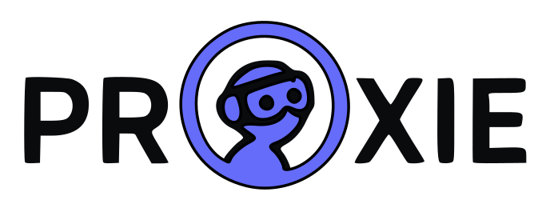
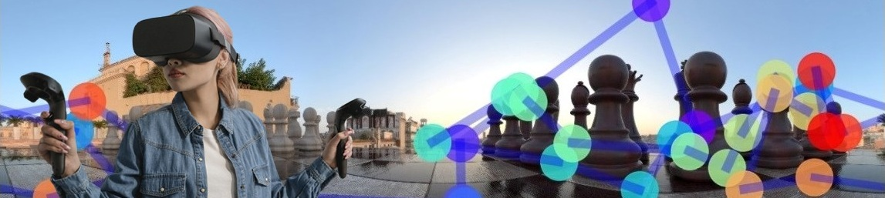

WP1
Attention
Models of gaze and attention allocation. We study how users distribute their attention across immersive environments and how this changes with different tasks and multisensory conditions.


PROXIE
studies how human perception changes when users actively interact with immersive Extended Reality (XR) environments.
Much of our current understanding of perception comes from carefully controlled laboratory experiments. XR provides an opportunity to complement these studies by investigating perception in more realistic and interactive environments.
PROXIE investigates how attention and multisensory perception are shaped by tasks, cognitive demands, and environmental context. By combining XR experiments, eye tracking, physiological sensing, psychophysics, and machine learning, we aim to develop computational models of perception that enable the next generation of adaptive XR systems.
Models of gaze and attention allocation. We study how users distribute their attention across immersive environments and how this changes with different tasks and multisensory conditions.
Detection thresholds and perceptual limits for audio, vision, and proprioception. We investigate when users notice sensory inconsistencies and how XR systems can exploit perceptual tolerance to improve interaction and performance.
Models of visual quality and perceived appearance. We study how task demands and environmental context influence the perception of visual content in XR.
Validation of the developed models in realistic applications including telepresence, storytelling, education, training, and collaborative environments.